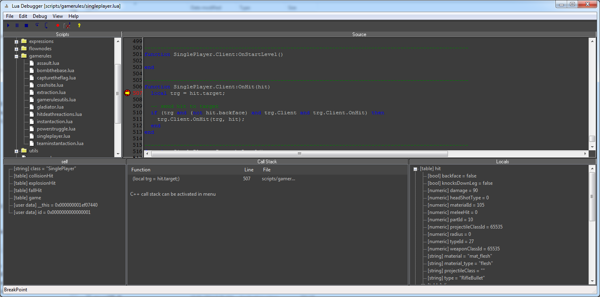

Обзор
CRYENGINE включает визуальный отладчик сценариев LUA. Отладчик встроен в CryScriptSystem, что делает его доступным как из Sandbox, так и из панели запуска.

Использование отладчика
Функцию отладки скриптов необходимо включить, установив параметр lua_debugger CVar на 1 или 2.
- lua_debugger 1 — отладчик прерывает работу как из-за точек останова, так и из-за ошибок сценария.
- lua_debugger 2 — отладчик прерывает работу только при ошибках сценария.
Инструмент отладчика можно открыть, введя следующую команду внутри игровой консоли:
lua_debugger_show
Обратите внимание, что любые изменения кода, выполненные в окне отладчика, не окажут никакого влияния на загруженный скрипт и, что более важно, любые изменения будут отменены после закрытия окна.
Окно отладчика может перезагрузить сценарии в любое время, выбрав параметр «Обновить» в меню «Файл».
Также возможно вызвать окно отладчика из сценария Lua, который имеет тот же эффект, что и точка останова, но дает вам больше контроля.
System.ShowDebugger()
Использование точек останова
В меню окна отладчика вы можете увидеть, какой режим выбран в данный момент, и изменить его. Также точки останова меняют цвет: красный указывает на то, что они активны, а серый — на то, что они отключены.
- F5 - Продолжай.
- F9 - Переключить точку останова.
- F10 - Подойди.
- F11 - Вступай.
Обратите внимание, что стек вызовов всегда показывает вызовы Lua, но изначально не показывает вызовы C/C++. Это можно включить в меню и может вызвать начальную остановку примерно на 10 секунд для необходимой инициализации.
Другой полезный пункт меню: «Сбросить все панели», чтобы вернуть макет окна к разумным настройкам.